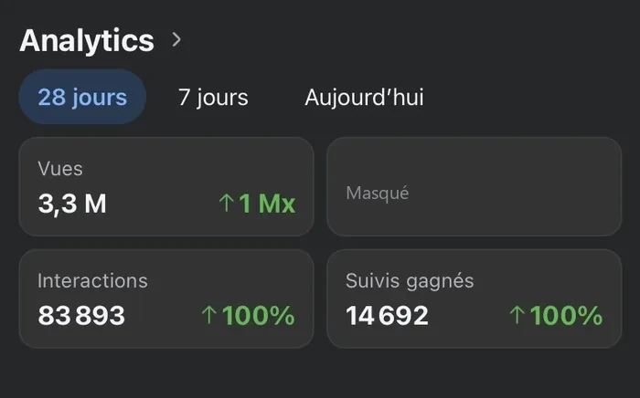
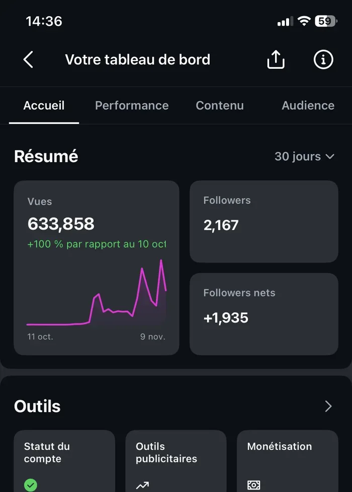
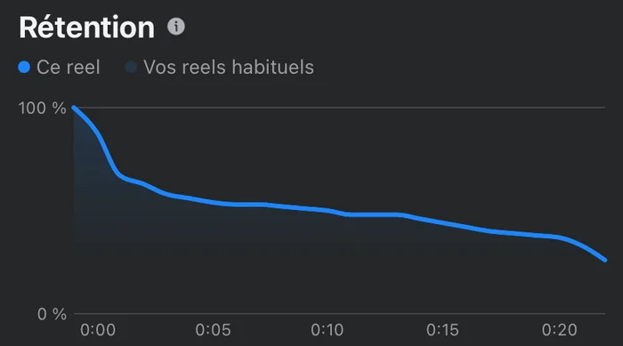
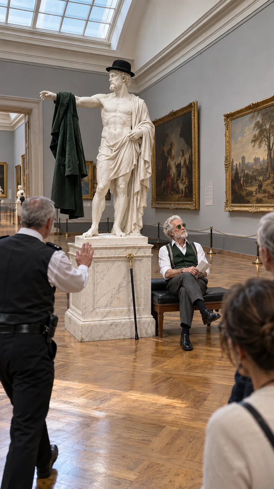
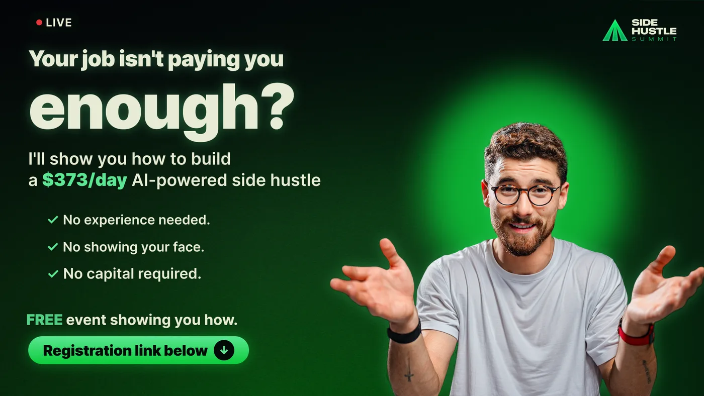
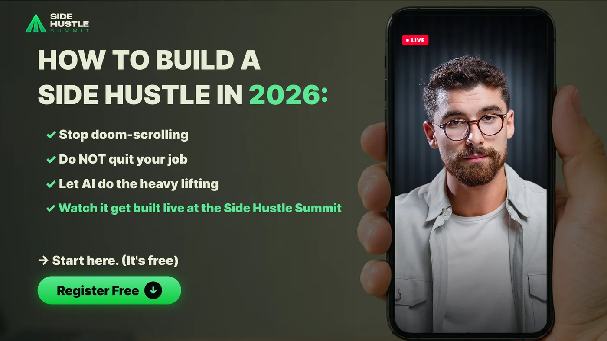
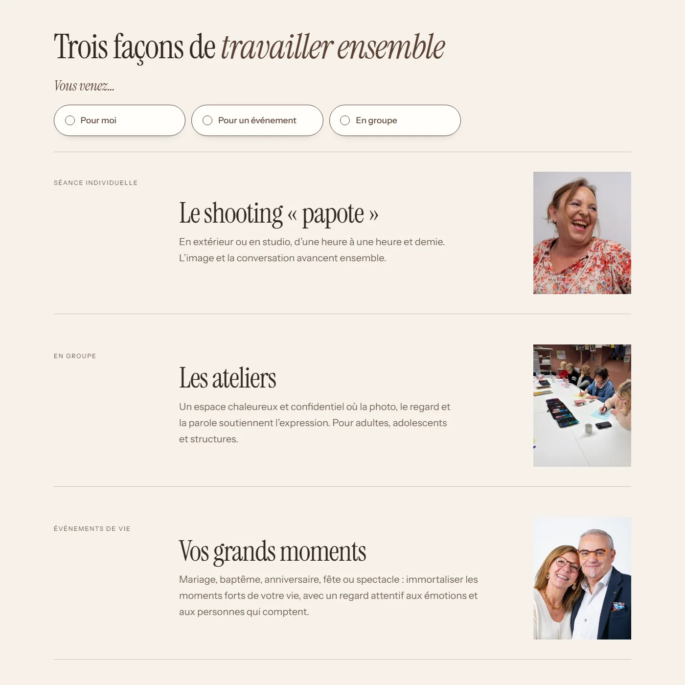

Thomas Fellmann, content marketer in Liège
Thomas Fellmann, content marketer in Liège
Available now, in Belgium or remote
I built an 18,000‑follower audience in one month. Alone, with AI.
Short-form video, social media, pages built to sell. I learn and improve every day: I’m looking for the team that will take me in and guide me further.

Four pieces of proof. Start with the one you care about.
Owen Rish: an audience built from zero
A 60-something character who tells men over 50 how to look and feel attractive again. He is made with AI. The audience, the formats and the numbers are real.

- The problem
- Men between 50 and 70 scroll Facebook every day, and almost no creator talks to them.
- What I did
- I studied the accounts that had already won that audience, created Owen and designed a production line that ships three videos a day. Then I measured every week and rebuilt what didn’t work.
- The result
- 18,000+ followers and 5.5M+ views in one month (stats of 16 Nov 2026). On Facebook, nine views out of ten come from people who didn’t follow him.
My role: solo. Audience research, character, scripts, production, publishing and measurement.
Three formats, frozen once they worked
“Stop doing this”: one style mistake, then the fix. The reach engine, 63,200 median views.
Owen scores a look out of ten, then asks viewers for theirs. Everyone compares their score with Owen’s: twice the comments of “Arrête ça”.
Advice drawn from studies and recognised data: I make nothing up and I don’t sell at any cost. The video ends on a call to comment “REGARD”: the entrance to the sales funnel.
Medians on Facebook posts at least three days old, 20 Oct to 5 Nov 2026. On YouTube, the most-watched “Arrête ça” Shorts are watched at 73% to 105% of their length: people replay them. Originals in French; English subtitles added here.
The numbers, day by day
Facebook took off on day six. The chart covers the twenty days when I published three videos a day. From 8 November, short of time and budget, I went down to one: the days are no longer comparable, so I don’t mix them.
15,394 followers gained in 20 days
- 26 Oct First videos pass 100k views a day
- 27 Oct I rebuild the formats: the celebrity Verdict becomes “the look of the day”
- 1 Nov Facebook re-pushes older reels: 1.5M views in two days
Daily data exported from Meta Business Suite on 8 November 2026. The chart stops on 7 November, the last day at three videos a day.




One post, 48 hours
A single video that travelled on its own: fifteen times the views of my usual posts, in two days.
- 88,482views in 48 hours
- +1,409%compared with my usual posts
- 407followers gained by this one video
- 90%of viewers who didn’t follow Owen
Facebook analytics for the post, screenshots of 16 Nov 2026. The revenue tile is masked.



What viewers wrote under the videos
Nobody was paid or asked. Three things come back: thanks, requests for the guide, and one question I had not planned for: where to buy.
One viewer asks for links to buy

“The clothes you show as examples: could you give one or two links where we could find them? Sign an ad deal with a well-known retailer, you see what I mean?”
Another asks where to buy
Vous devriez vous dire et nous dire ou on peut acheter pas trop cher ça serait pas mal aussi et pour femme egalement
You should tell us where we can buy this without paying too much, that would be good too, and for women as well
Bravo, nous les femmes aussi ont regarde un homme, merçi pour vos vidéos
Bravo, we women look at men too, thank you for your videos
Le problème est que beaucoup de personnes ont perdu le sens de l'allure...de la séduction…
The problem is that many people have lost the sense of style… of seduction…
Merci pour tout vos conseils
Thank you for all your advice
10/10 très élégant.....
10/10 very elegant
Ça c'est la classe !!!
Now that’s class
la tenue classique ne meurt pas
Classic style never dies
Real Facebook comments, copied as written, typos included. Names and photos removed; screenshots kept (4 Nov 2026).
The machine behind three videos a day
One person can’t hand-make 74 videos in four weeks. So I designed a production line and run it with Claude Code and Codex. The tools do the volume; I make the calls: which formats live, what Owen would never say, when to stop.
Research
Big accounts and search demand, before any idea.
Brief
Hook, words and scene written first.
Images
Generated, then a face-identity score on each.
Voice
ElevenLabs, one voice, one speed.
Edit
Python scripts cut and time the subtitles.
Checks
Lip sync, loudness, framing, then publish.
Measure
Sunday stats; decisions written down.



Every scene is written before it is generated: place, light, and what a stranger should understand in one second.
Measure, adapt, repeat
The first ten days gave me my first data. I kept what worked, rebuilt what didn’t, then measured again.
- ×8views for the Verdict once celebrities became “the look of the day”
- ×7comments under La Leçon since the “comment REGARD” call
- 5.4followers per 1,000 views on Facebook once the formats were rebuilt
One example. The first Verdict scored a celebrity’s look: 3,400 median views. I replaced it with “the look of the day”, an ordinary man viewers can score too: 26,900. Every Sunday I pull the numbers and write down what I keep, what I change and what I stop. The next step was ready before the first euro: a free guide to collect email addresses, then a paid guide, “12 pieces, 30 outfits”.
Facebook medians, 20–25 Oct against 26–31 Oct 2026; 5.4 followers per 1,000 views from 26 to 30 Oct.


From view to purchase: the full funnel
- The problem
- Views are not revenue. The audience needed a path from the video to a purchase, with a measure at every step to see where people drop off.
- What I did
- A five-step funnel, built solo: the call at the end of the video, the private message, the free guide page, then a Shopify store on Owen’s domain with my own sections in the theme.
- The result
- About 100 guide requests a week and 1,258 visits to its page. The store is ready, in preview mode: I won’t open sales until the business is registered, so there is no sales figure yet.
My role: solo. Offer structure, custom sections in the Shopify theme and the path to purchase.
- 5.5M+
The video
Every Leçon ends on the same call: comment “REGARD”.
- ≈ 100
The comment
Requests per week on Facebook (stats of 8 Nov). The keyword shows who wants to go further.
- 1 link
The private message
Every request gets the link to Owen’s site, in private.
- 1,258
The guide page
Visits as of 14 Nov. A guide of 10 tips, free in exchange for an email address.
- 3 offers
The store
From €19.99 to €39.99. Ready; sales are not open yet.
Four sales mechanisms. Two of them work right here: try them.
Tap what you already have in your wardrobe.
0
282 €
Same pieces, prices and outfit rules as the store. The store is in French; I translated the labels here.
The visitor sells the guide to himself
He ticks what he already owns. The page counts how many of the 30 outfits he can wear today and what the missing pieces cost: the guide becomes the answer to his own sum.
Tick two or three pieces and watch the numbers.

Demo of the mechanism. On the store, the date comes from the server, not from the visitor.
A reason to come back every morning
24 doors, one per morning from 1 to 24 December. The theme checks the date in Brussels and only writes a door into the page on its day, so buyers come back every morning and nobody can peek ahead in the code.
Move the date and watch the doors open.


A guided choice, not a price list
19.99, 29.99 and 39.99 €. The middle one is marked “my advice” and adds the Advent calendar; locked lines show what each step up unlocks. Launch bonuses expire on a fixed date, with a 30-day money-back guarantee.
Give before you ask
A pop-up after 2.5 seconds offers Owen’s free guide for an email, plus 10% off the paid guide. It never comes back once you’ve signed up.Built 4 to 6 November 2026. Screenshots taken in preview mode on 13 November.
Eight ads in one day
- The problem
- I applied to Consulting.com (Iman Gadzhi’s company) for a Marketing Designer role. After the first tests, the practical test of their hiring process arrived at 8:30: design four ads in two formats for a free five-day event, with one goal, registrations. Deadline: 24 hours.
- What I did
- I opened Figma for the first time that morning. I set three rules before drawing anything, then took four ideas through two formats.
- The result
- Eight designs submitted at 22:45 the same day, almost ten hours before the deadline. Their hiring decision is pending.
My role: layout, hierarchy and visual system. Brand, copy and photos supplied by Consulting.com.
- 8:30The brief arrives
- 15:45First ad approved
- 22:10Eight designs exported
- 22:45Sent, ten hours before the deadline
Three rules set before drawing
One giant element
One word or number per ad, everything else small: the offer is understood in one second.
Cinema light
A halo and a rim light on the face: the eye goes to the person first.
No box except the button
One solid shape in the picture: the eye knows where to click.
The four ideas in 4:5, then in 16:9. Click an ad to enlarge it. Open the Figma file





Before and after: my godmother’s website
- The problem
- The website of my godmother, a therapeutic photographer, opens on a full-screen photo next to a menu with a single link: a visitor can’t tell what she offers or how to book.
- What I did
- I rebuilt it on WordPress from one question: what situation is the visitor in when they arrive? Three decisions follow, detailed below.
- The result
- The new version is ready. It goes live as soon as the technical transfer of the site is unblocked.
My role: everything, as a volunteer: structure, WordPress layout, shop and legal pages.
Drag the handle to compare.


Before: valeriebruckmann.be, live on 13 November 2026.
Three decisions
Say what a session is for
Before: a full-screen photo, not a word. After: one sentence, “See yourself differently, reconnect with yourself”, and two buttons.
Enter through your situation
“For me”, “For a wedding”, “As a group”: visitors pick their case and land on the right session.
Sell and reassure
A print shop, a logo, a legal notice and cookie consent: the site can take payments and it is compliant.


The questions you’re asking yourself
Does a character made with AI count?
The character is generated; the audience is not. The 5.5M views and the 18,000 followers are real people, and nine out of ten didn’t follow Owen when they saw the video. What produced that result is audience research, hooks and consistency.
What sets you apart from another junior?
I’m not showing school exercises: I’m showing a real audience, measured day by day. I held several jobs at once, alone: audience research, scripts, production, sales funnel, store. And when a format doesn’t work, I rebuild it: the Verdict got eight times the views afterwards.
How much money did it make?
None so far, and that is a choice: the store is ready, but I won’t open sales until the business is registered. What I can show is demand: about a hundred guide requests a week, 1,258 visits to its page, and viewers asking, unprompted, where to buy.
Why look for a job if the project works?
Because I have learned alone what can be learned alone. Owen proves I can find an audience and make it react. To learn how to turn that into revenue at the scale of a brand, I need people who have already done it and who tell me where I’m wrong.
What can you do without AI?
AI does the volume, not the choices. Deciding who to talk to, which hook to keep and what to stop is my job. Before Owen I organised a medical day for 400 people, sold in English every day in Malta and ran communities of 10,000 to 40,000 members.
What company experience do you have?
Three years at CHR Citadelle hospital (internship, volunteering, then student job), a marketing internship at Télévie, a sales internship at Celio in Malta, and freelance work from 2021 to 2025, for 150+ clients. I haven’t held a full-time marketing job yet: that is what I’m looking for.
When, where, what contract?
Now. In Liège, elsewhere in Belgium, or remote. Fixed-term, temp or permanent. French native, English B2.

Five years of learning by doing
I don’t wait to be taught: I build, measure and fix. Before Owen I ran online communities of 10,000 to 40,000 members, built YouTube channels for a US audience and sold several of them, organised a hospital medical day for up to 400 people, and sold in English every day during an internship in Malta.
Alongside all that, I waited tables in a banquet hall for nine years and finished my marketing degree at HELMo in 2026. Owen was the first time I put all of it into one project. I work best with a hard deadline, a clear goal and no way back.
- 2026Owen Rish: 18,000+ followers and 5.5M views in one month, solo
- 2026Bachelor in Marketing, HELMo, Liège
- 2021–2025Freelance, 150+ clients through ComeUp: social media, video, online communities, Shopify
- 2021–2024CHR Citadelle, Liège: medical day for up to 400 people, recruitment and prevention videos, rebranding
- 2024Marketing internship, Télévie at CHU de Liège: 24h Vélo sponsorship
- 2023Sales internship, Celio, Sliema, Malta, in English
- 2017–2026Banquet waiter, Clos les Bruyères: a student job held for nine years
French native, English B2, basic Dutch.
What you get
- 24 h
Speed under a deadline
Eight ad designs delivered the same day for a hiring test due within 24 hours, in a tool I was opening for the first time.
- 7 steps
Systems, not one-offs
A production line with automatic checks on face, lip sync, loudness and framing.
- 9 in 10
Hooks that reach strangers
The share of Owen’s Facebook views that came from people who didn’t follow him.
- ×8
I measure, then I fix
The Verdict’s views after I replaced a format that wasn’t working. The numbers decide, not my opinion.
Give me a real brief and a deadline. Judge me on what I send back.
thomas.fellmnn@gmail.com. Based in Liège, Belgium. Available now, on site or remote.